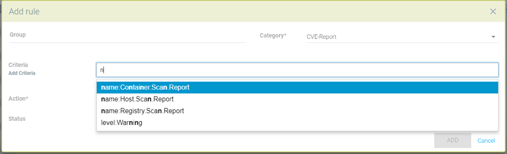
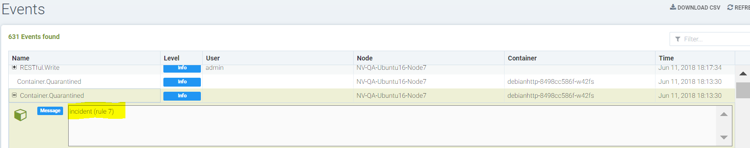

Regras de Resposta
Política: Regras de Resposta
As Regras de Resposta fornecem um mecanismo de regras flexível e personalizável para automatizar respostas a eventos de segurança importantes. Os gatilhos podem incluir Eventos de Segurança, resultados de Varredura de Vulnerabilidades, Benchmarks CIS, eventos de Controle de Admissão e Eventos gerais. As ações incluem quarentena de contêineres, webhooks e supressão de alertas.

Criando uma nova Regra de Resposta usando o seguinte:
-
Group. Uma regra se aplicará a um Grupo. Por favor, veja a seção Política de Segurança em Tempo de Execução → Grupos para mais detalhes sobre Grupos e como criar um novo, se necessário.
-
Categoria. Este é o tipo de evento, como Evento de Segurança ou resultado de varredura de vulnerabilidade CVE.
-
Critérios. Especifique um ou mais critérios. Cada Categoria terá critérios diferentes que podem ser aplicados. Por exemplo, pelo nome do evento, severidade ou número mínimo de CVEs altos.
-
Ação. Selecione uma ou mais ações. A quarentena bloqueará todo o tráfego de rede para dentro e para fora de um contêiner. Webhook requer que um endpoint de webhook seja definido nas Configurações → Configuração. A supressão de log impedirá que este evento seja registrado nas Notificações.

|
Todas as Regras de Resposta são avaliadas para determinar se correspondem à condição/critérios. Se houver várias correspondências de regras, cada ação será executada. Isso é diferente do comportamento das Regras de Rede, que são avaliadas de cima para baixo e apenas a primeira regra que corresponder será executada. |
Eventos e ações adicionais continuarão a ser adicionados por SUSE® Security em futuras versões.
Configuração Detalhada para Regras de Resposta
As Regras de Resposta permitem respostas automatizadas, como quarentena, webhook e supressão de log, com base em certos eventos de segurança. Atualmente, os eventos que podem ser definidos na regra de resposta incluem logs de eventos, logs de eventos de segurança e relatórios de CVE (varredura de vulnerabilidades) e benchmarks do CIS. As regras de resposta são aplicadas em todos os modos: Descobrir, Monitorar e Proteger, e o comportamento é o mesmo para os 3 modos.
Ações de várias regras serão aplicadas se um evento corresponder a várias regras. Cada regra pode ter várias ações e vários critérios de correspondência. Todas as ações definidas serão aplicadas aos contêineres quando os eventos corresponderem aos critérios da regra de resposta. No caso de haver uma correspondência para eventos de Host (não contêiner), atualmente as ações webhook e supressão de log são suportadas.
Existem 6 regras de resposta padrão incluídas com SUSE® Security, que estão definidas para o status ‘disabled,’, uma para cada categoria. Os usuários podem modificar uma regra padrão para atender às suas necessidades ou criar novas. Certifique-se de habilitar quaisquer regras que devem ser aplicadas.
Usando Múltiplos Critérios em uma Única Regra
A lógica de correspondência para múltiplos critérios em uma regra de resposta é:
-
Para diferentes tipos de critérios (por exemplo, nome:Network.Violation, nome:Process.Profile.Violation) dentro de uma única regra, aplique 'e'.
operador
-
O contêiner de Quarentena — está em quarentena. Observe que quarentena significa que todo o tráfego de rede está bloqueado. O contêiner permanecerá e continuará em execução - apenas sem nenhuma conexão de rede. O Kubernetes não iniciará um contêiner para substituir um contêiner em quarentena, pois o servidor API ainda consegue acessar o contêiner.
-
Webhook - um log de webhook gerado
-
suppress-log — log está suprimido - tanto o log do syslog quanto o log do webhook
|
Criando uma regra de resposta para logs de eventos de segurança
-
Clique em "inserir no topo" para inserir a regra no topo
-
Escolha um nome de grupo de serviço se a regra precisar ser aplicada a um grupo de serviço específico
-
Escolha a categoria como evento de segurança
-
Adicione critérios para que o log de evento seja incluído como critérios correspondentes
-
Selecione ações a serem aplicadas: Quarentena, Webhook ou suprimir log
-
Status habilitado
-
Os níveis de log ou nomes de processos podem ser usados como outros critérios de correspondência
Exemplo de regra para colocar o contêiner em quarentena e enviar um webhook quando o pacote for atualizado no contêiner nv.alpinepython.default.

Criando uma regra de resposta para logs de eventos
-
Clique em "inserir no topo" para inserir a regra no topo
-
Escolha um nome de grupo de serviço se a regra precisar ser aplicada a um grupo de serviço específico
-
Escolha a categoria do evento
-
Adicione o nome do log de eventos a ser incluído como critério de correspondência.
-
Selecione as ações a serem aplicadas - Quarentena, Webhook ou suprimir log
-
Status habilitado
-
O nível de log pode ser usado como outro critério de correspondência

Criando uma regra de resposta para a categoria CVE-Report (nível de log e nome do relatório como critérios de correspondência).
-
Clique em "inserir no topo" para inserir a regra no topo
-
Escolha um nome de grupo de serviço se a regra precisar ser aplicada a um grupo de serviço específico
-
Escolha a categoria CVE-Report
-
Adicione o nível de log como critério de correspondência ou tipo de CVE-Report.
-
Selecione as ações a serem aplicadas: Quarentena, Webhook ou suprimir log (quarentena não é aplicável à varredura de registro)
-
Habilitar status
Exemplos de tipos de relatório CVE que podem ser escolhidos para a regra de resposta da categoria CVE-Report.

Colocar o contêiner em quarentena e enviar um webhook quando os resultados da varredura de vulnerabilidades contiverem mais de 5 vulnerabilidades CVE de alto nível para esse contêiner


Criando regra de resposta para benchmarks CIS (nível de log e número do benchmark como critérios de correspondência)
-
Clique em "inserir no topo" para inserir a regra no topo
-
Escolha o nome do grupo de serviços se a regra precisar ser aplicada a um grupo de serviços específico
-
Escolha a categoria Benchmark
-
Adicione o nível de log como critério de correspondência ou número do benchmark, por exemplo. “5.12” Assegure-se de que o sistema de arquivos raiz do contêiner esteja montado como somente leitura
-
Selecione as ações a serem aplicadas: Quarentena, Webhook e suprimir log (quarentena não é aplicável ao benchmark do Host Docker e Kubernetes).
-
Status habilitado

Remova a quarentena de um contêiner excluindo a regra de resposta
-
Você pode querer remover a quarentena de um contêiner se ele estiver em quarentena por uma regra de resposta
-
Exclua a regra de resposta que causou a quarentena do contêiner, que pode ser encontrada no log de eventos
-
Selecione a opção de desquarentena para remover a quarentena do contêiner após excluir a regra.
Visualizando o ID da regra responsável pela quarentena do contêiner (em Notificações → Eventos)

Popup de opção de desquarentena quando a regra de resposta apropriada é excluída
Marque a caixa para desquarentinar quaisquer contêineres que foram colocados em quarentena por esta regra.

Lista completa de critérios categorizados que podem ser configurados para Regras de Resposta
Observe que alguns critérios exigem um valor (por exemplo, cve-high:1, name:D.5.4, level:critical) delimitado por dois pontos, enquanto outros são predefinidos e aparecerão no menu suspenso quando você começar a digitar um critério.
Eventos
Container.Start
Container.Stop
Container.Remove
Container.Secured
Container.Unsecured
Enforcer.Start
Enforcer.Join
Enforcer.Stop
Enforcer.Disconnect
Enforcer.Connect
Enforcer.Kicked
Controller.Start
Controller.Join
Controller.Leave
Controller.Stop
Controller.Disconnect
Controller.Connect
Controller.Lead.Lost
Controller.Lead.Elected
User.Login
User.Logout
User.Timeout
User.Login.Failed
User.Login.Blocked
User.Login.Unblocked
User.Password.Reset
User.Resource.Access.Denied
RESTful.Write
RESTful.Read
Scanner.Join
Scanner.Update
Scanner.Leave
Scan.Failed
Scan.Succeeded
Docker.CIS.Benchmark.Failed
Kubenetes.CIS.Benchmark.Failed
License.Update
License.Expire
License.Remove
License.EnforcerLimitReached
Admission.Control.Configured // for admission control
Admission.Control.ConfigFailed // for admission control
ConfigMap.Load // for initial Config
ConfigMap.Failed // for initial Config failure
Crd.Import // for crd Config import
Crd.Remove // for crd Config remove due to k8s miss
Crd.Error // for remove error crd
Federation.Promote // for multi-clusters
Federation.Demote // for multi-clusters
Federation.Join // for joint cluster in multi-clusters
Federation.Leave // for multi-clusters
Federation.Kick // for multi-clusters
Federation.Policy.Sync // for multi-clusters
Configuration.Import
Configuration.Export
Configuration.Import.Failed
Configuration.Export.Failed
Cloud.Scan.Normal // for cloud scan nomal ret
Cloud.Scan.Alert // for cloud scan ret with alert
Cloud.Scan.Fail // for cloud scan fail
Group.Auto.Remove
Agent.Memory.Pressure
Controller.Memory.Pressure
Kubenetes.{product-name}.RBAC
Group.Auto.Promote
User.Password.AlertIncidentes (Evento de Segurança)
Host.Privilege.Escalation
Container.Privilege.Escalation
Host.Suspicious.Process
Container.Suspicious.Process
Container.Quarantined
Container.Unquarantined
Host.FileAccess.Violation
Container.FileAccess.Violation
Host.Package.Updated
Container.Package.Updated
Host.Tunnel.Detected
Container.Tunnel.Detected
Process.Profile.Violation // container
Host.Process.Violation // hostAmeaças (Evento de Segurança)
TCP.SYN.Flood
ICMP.Flood
Source.IP.Session.Limit
Invalid.Packet.Format
IP.Fragment.Teardrop
TCP.SYN.With.Data
TCP.Split.Handshake
TCP.No.Client.Data
TCP.Small.Window
TCP.SACK.DDoS.With.Small.MSS
Ping.Death
DNS.Loop.Pointer
SSH.Version.1
SSL.Heartbleed
SSL.Cipher.Overflow
SSL.Version.2or3
SSL.TLS1.0or1.1
HTTP.Negative.Body.Length
HTTP.Request.Smuggling
HTTP.Request.Slowloris
DNS.Stack.Overflow
MySQL.Access.Deny
DNS.Zone.Transfer
ICMP.Tunneling
DNS.Type.Null
SQL.Injection
Apache.Struts.Remote.Code.Execution
DNS.Tunneling
K8S.externalIPs.MitMConformidade
Compliance.Container.Violation
Compliance.ContainerFile.Violation
Compliance.Host.Violation
Compliance.Image.Violation
Compliance.ContainerCustomCheck.Violation
Compliance.HostCustomCheck.Violation
Compliance.Test.Name // D.[1-5].*CVE-Report
ContainerScanReport
HostScanReport
RegistryScanReport
PlatformScanReport
cve-name
cve-high
cve-medium
cve-high-with-fix // cve-high-with-fix:N (fixed high vul.>N) cve-high-with-fix:N/D (fixed high vul.>N and reported more than D days ago)